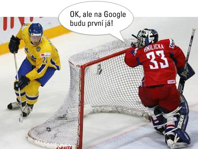

21. květen 2006, 23:13 Kategorie: Webdesign
Ve finále hokejovém mistrovství jsme tentokrát na Švédy nestačili. Nepropadejme však úzkosti. Máme jinou disciplínu, ve které obyvatelé země tří korunek a celý svět s nimi Čechům jen sleduje záda. Optimalizaci pro vyhledávače aneb SEO.

Foto: www.sport.cz
Čeština je nejpoužívanějším jazykem při vyhledávání fráze SEO na Google. Když onu magickou formulku hledáte v české doméně, Google nalezne 1 750 000 stránek. V jen o trochu menším Rakousku to je pouhých 107 000 a stejně početné Švédy pak v SEO deklasujeme 1 750 000 : 268 000.
V Česku se přijímají SEO programátoři, již jednou optimalizované SEO se znovu optimalizuje, SEO se prodává jako krabicové řešení ale pozor: SEO je citlivé a může ho leccos narušit. Třeba dlouhé menu.
Triky, jakými se SEO dostalo pod kůži technologicky zdatných Čechů a kromě jiného jak vidíme pomohlo při prznění jazyka, rostou na stromech ve vysněném ráji všech marketingových expertů.
Ale co když nejsme mistry světa v SEO, ale ve vyčůranosti? Co když za magické zkratky schováváme svou neznalost složitého webdesignu a skládáme si z něj berličky, abychom své okolí jen rychle něčím uhranuli. Nebo jsme šikovní kutilové, co rychle všechno pochopí a nadchnou se pro novinky?
Ulož do delicious, linkuj.cz, jagg.cz, vybrali.sme.sk Díky!
Diskuze
[ RSS této diskuze ]
Vilém Málek, 22. 05. 06, 06:45, #
Jan Rozehnal, 22. 05. 06, 08:40, #
TonyK, 22. 05. 06, 10:05, #
Black Wolf, 22. 05. 06, 10:11, #
Martin Keder, 22. 05. 06, 10:51, #
Petr, 22. 05. 06, 11:13, #
Marek Prokop, 22. 05. 06, 11:31, #
Martin Michálek, 22. 05. 06, 11:36, #
Martin Michálek, 22. 05. 06, 11:47, #
Radek Hulán, 22. 05. 06, 13:19, #
anička, 22. 05. 06, 15:31, #
Martin Michálek, 22. 05. 06, 18:04, #
anička, 22. 05. 06, 18:33, #
Komentáře jsou uzavřeny